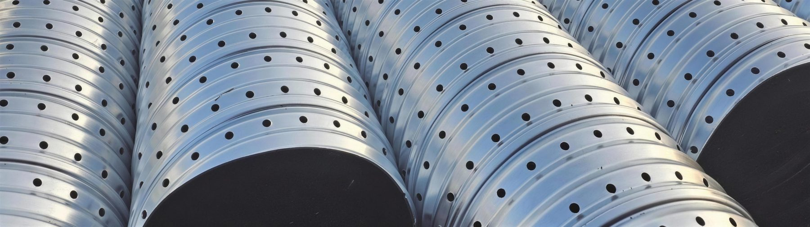
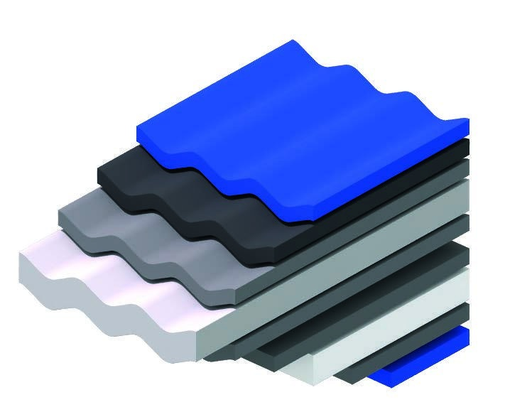

ارتباط قوي بالفولاذ.
يُستخدم التسخين بالحث عالي التردد لإلصاق الغشاء الوظيفي متعدد الطبقات بالفولاذ.

0RS · 1RS · 3RS / تغليف NPE · أنابيب SL ذات السطح الداخلي الأملس
من تقنية تغليف NPE لدى Daehan Steel Pipe إلى أنابيب SL ذات السطح الداخلي الأملس لدى Shinhan Steel Pipe. استعرض التموجات والتغليف وطرق الوصل معاً.
يُختار التموج وفق الاستخدام وشروط التصميم. يجب التحقق بصورة مستقلة من نوع التموج والتغليف والبنية الداخلية الملساء.

| التموج | خطوة التموج P | عمق التموج H |
|---|---|---|
| 0RS | 38.0 mm | 6.5 mm |
| 1RS | 68.0 mm | 13.0 mm |
| 3RS | 76.2 mm | 25.4 mm |
من أنابيب التصريف والتجميع الصغيرة إلى عبارات عبور الطرق، تُراجع الأقطار والغطاء والأحمال والشروط الهيدروليكية.
أبعاد تموج نموذجية للأنابيب العادية. تُراجع كتالوجات كل منتج للتأكد من الأقطار والسماكات ونطاق الأنواع ذات السطح الداخلي الأملس.
غشاء وظيفي متعدد الطبقات ملتصق بالفولاذ —
تقنية التغليف عالي الالتصاق من Daehan Steel Pipe.

يُستخدم التسخين بالحث عالي التردد لإلصاق الغشاء الوظيفي متعدد الطبقات بالفولاذ.
يُختار المنتج بحسب بيئة الخدمة مع مراعاة مقاومة طبقة التغليف للتآكل والمواد الكيميائية والبري.
غشاء وظيفي عالي الالتصاق يراعي قابلية إصلاح طبقة التغليف المتضررة.
تُدرس السوائل الداخلية والتربة الخارجية معاً،
لاختيار التغليف الداخلي أو الداخلي والخارجي.
تغليف وظيفي على السطح الداخلي للأنبوب.


تغليف وظيفي على السطحين الداخلي والخارجي للأنبوب.

يصف كتالوج Daehan Steel Pipe تاريخ اعتماد NEP للأنابيب الفولاذية المموجة المغلفة بغشاء وظيفي عالي الالتصاق يسهّل إصلاح التغليف المتضرر.
تجمع أنابيب SL بين جدار فولاذي مموج خارجي وبطانة فولاذية ملساء داخلية، ضمن بنية مزدوجة.

يتحمل الجدار المموج الخارجي الأحمال، بينما يساعد السطح الداخلي الأملس على التدفق. تتضمن تقنية SL (Sealed Lock-Seam) من Shinhan مادة إحكام عند الوصلة المقفلة تتكامل مع طبقة التغليف.
يُراجع إحكام الوصلة المقفلة بجسم الأنبوب، مع الحشيات وشدّ الوصلات الميدانية.


نتائج الكتالوج خاصة بالعينات والشروط المحددة. يجب التأكد بصورة مستقلة من الموديل وظروف التصميم الميدانية.
تُختار الوصلة وفق التموج والقطر وإعادة تشكيل الأطراف ومتطلبات منع تسرب المياه.

تُوضع حشية حول نهايات الأنبوب المعاد تشكيل تموجها، ثم يُثبت الحزام بالمسامير.

تُجمع شفّات الأطراف مع الموصل المركزي ومطاط الإحكام، ثم تُربط.
يصف الكتالوج أيضاً إدخال جلبة داخل نهايات الأنابيب وإنهاء الوصلة بشريط انكماش حراري خارجي.
تأكد من القطر والطول والتموج وترتيب التغليف والوصلات معاً.
المصادر: كتالوج Daehan Steel Pipe، الصفحات 6–15؛ كتالوج Shinhan Steel Pipe، الصفحات 6–13؛ وتعريف منتجات NPE. يُفرّق بين تاريخ الاعتماد وصلاحيته الحالية.
تواصل معنا بشأن المنتجات والتصميم ودعم التنفيذ.